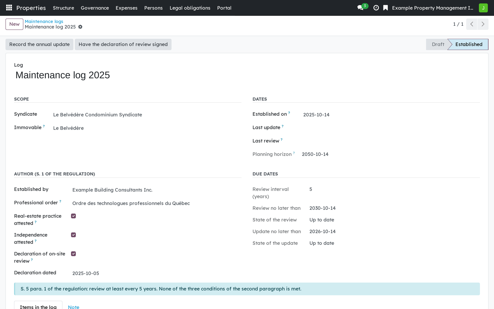
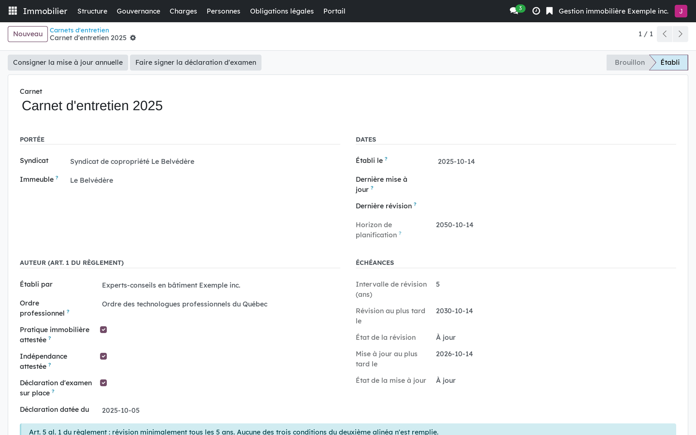

Version française plus bas.
This bridge connects the co-ownership suite to electronic signature. It wires signature onto three documents that do not have the same standing, and says so rather than treating them alike. It installs itself when both sides are present.

The maintenance log sends the declaration of on-site review to its author for signature.
Requires Co-ownership: maintenance log, study and certificates (bf_property_records), Co-ownership: general meetings (bf_property_governance) and Electronic signature (bf_sign). Installs automatically.
Business Source License 1.1. You may use this module in production for your own internal business operations, which include administering immovables that you own or that you are constituted to administer, and letting a person acting on your behalf use your instance for that purpose. Administering immovables for the account of others, or providing the module to third parties as a product or service, whether hosted, managed or resold, requires a separate written agreement with the licensor. Each version converts to LGPL-3.0-or-later on the Change Date stated in the LICENSE file, which sets out the exact terms.
Ce pont relie la suite de copropriété à la signature électronique. Il branche la signature sur trois pièces qui n'ont pas le même statut, et le dit plutôt que de les traiter pareil. Il s'installe de lui-même quand les deux côtés sont présents.

Le carnet d'entretien envoie la déclaration d'examen sur place à la signature de son auteur.
Exige Copropriété : carnet, étude et attestations (bf_property_records), Copropriété : assemblées (bf_property_governance) et Signature électronique (bf_sign). S'installe automatiquement.
Business Source License 1.1. Vous pouvez utiliser ce module en production pour vos propres activités internes, ce qui comprend l'administration des immeubles dont vous êtes propriétaire ou que vous êtes constitué pour administrer, et l'usage de votre instance à cette fin par une personne qui agit pour votre compte. Administrer des immeubles pour le compte d'autrui, ou fournir le module à des tiers comme produit ou service, hébergé, géré ou revendu, exige une entente écrite distincte avec le concédant. Chaque version passe sous LGPL-3.0 ou ultérieure à la date de changement inscrite au fichier LICENSE, qui fait foi.